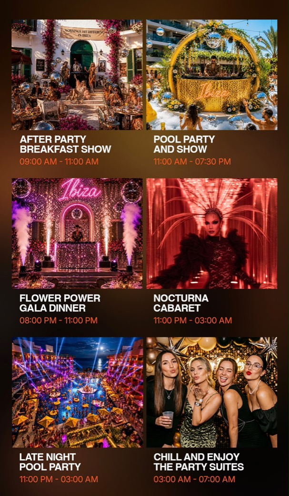
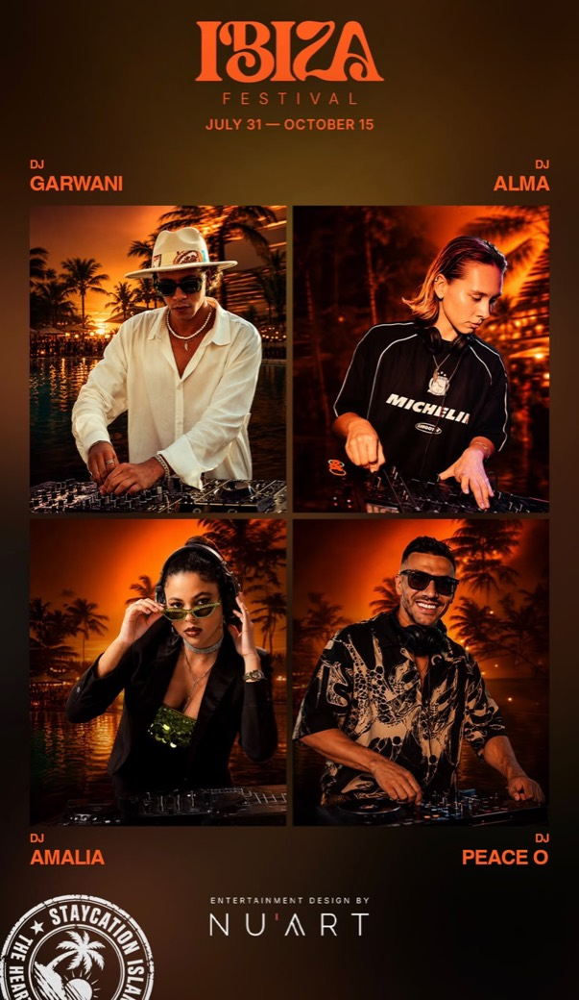

European Summer '25 · July 31 — Oct 15
一日22時間、
島は鳴りやまない。
The island plays 22 hours a day.
朝9時のアフターパーティ・ブレックファストから、翌朝7時のパーティスイートまで。ハート・オブ・ヨーロッパの「イビサ・フェスティバル」は、6つのプログラムが切れ目なく続く娯楽エリアです。 From the after-party breakfast at 9am to the party suites at 7am the next morning, the Ibiza Festival at The Heart of Europe runs six programmes back to back, with barely a pause.
22h
プログラムが続く時間Hours per day
静かなのは 07:00–09:00 の2時間だけ。Only 07:00–09:00 is quiet.
77日days
開催期間Season length
7月31日から10月15日まで、連日開催。31 July to 15 October, every day.
6
プログラムProgrammes
朝食ショーからカバレエ、深夜のプールまで。Breakfast show to cabaret to the late-night pool.
4
レジデントDJResident DJs
GARWANI · ALMA · AMALIA · PEACE OGarwani · Alma · Amalia · Peace O
1日のプログラムThe daily programme
時計の針が、
そのまま進行表になる。
The clock face is the running order.
外側のリングが本編の流れ、内側のリングは深夜に並走するレイトナイト・プールパーティです。23:00から03:00は、カバレエとプールが同時に動きます。 The outer ring is the main thread; the inner ring is the late-night pool party running alongside it. Between 23:00 and 03:00 the cabaret and the pool run at the same time.
- アフターパーティ・ブレックファストショーAfter Party Breakfast Show 09:00 — 11:00
- プールパーティ＆ショーPool Party and Show 11:00 — 19:30
- フラワーパワー・ガラディナーFlower Power Gala Dinner 20:00 — 23:00
- ノクターナ・カバレエNocturna Cabaret 23:00 — 03:00
- レイトナイト・プールパーティLate Night Pool Party 23:00 — 03:00（並走） (parallel)
- チル ー パーティスイートChill and Enjoy the Party Suites 03:00 — 07:00
※ 上記は「ヨーロピアン・サマー」期間中の標準スケジュールです。内容・時間は天候や催行状況により変更される場合があります。 The standard schedule during the European Summer season. Programmes and times may change with weather and operations.


会場The venues
プールサイドから、
ベルベットの回廊まで。
From the poolside to the velvet corridor.
ヨーロッパの街並みを写した建物そのものが会場です。昼はプールとテラス、夜はロビー、バー、カバレエへと舞台が移ります。 The buildings themselves — modelled on Europe — are the venue. The stage moves from pool and terrace by day to lobby, bar and cabaret by night.
予約・お問い合わせReservations
まずは、一泊
体験してみてください。
Start with a single night.
- ご予約Reservations
- reservations.voco@thoe-hotels.com
- お電話Telephone
- +971 52 126 5893
- 会場Venue
- voco Dubai Monaco (IHG) The Heart of Europe, The World Islands, Dubai
- 開催期間Season
- 2026年7月31日 — 10月15日31 July — 15 October 2026
島には、住まいもあります。 People live here, too.
ハート・オブ・ヨーロッパは、4つのヨーロッパを写したレジデンスが並ぶ島でもあります。建築や滞在の様子は ANAWAK の本サイトでご覧いただけます。 The Heart of Europe is also an island of residences, each modelled on a corner of Europe. You can see the architecture and the stays on the ANAWAK main site.